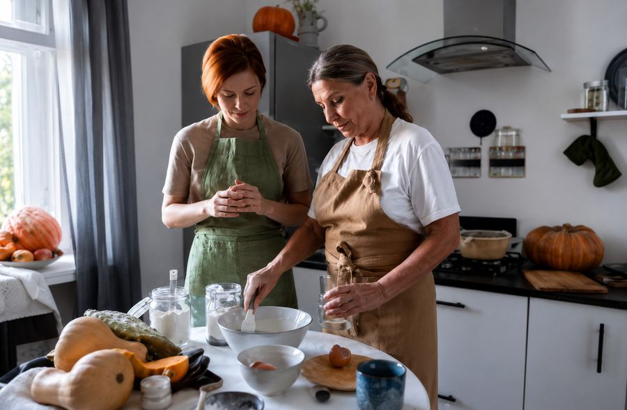
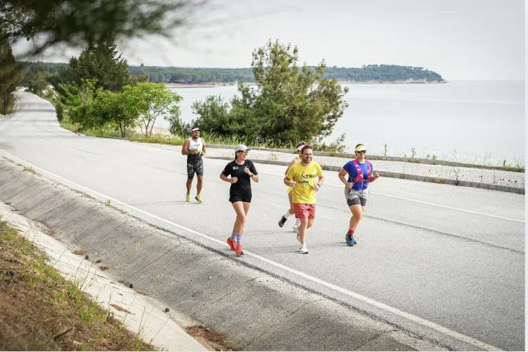
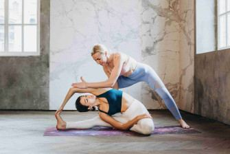
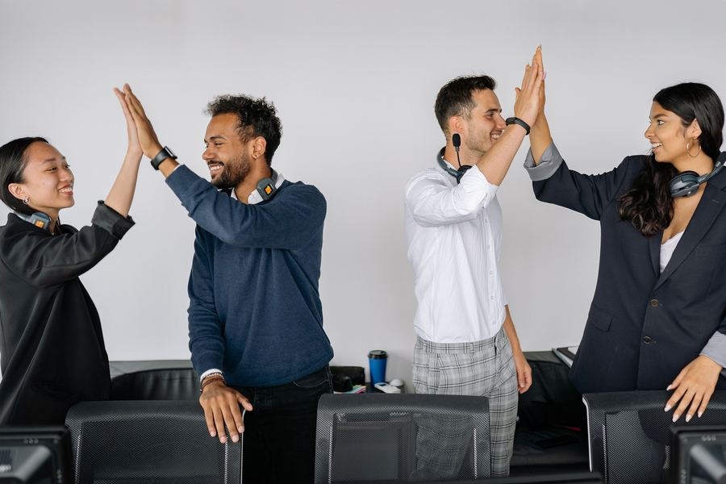

Aptis Speaking
Part 1: In this part, I am going to ask you three short questions about yourself and your interests. You will have 30 seconds to reply to each question.
1. Please tell me about the place where you live.
=> I live in a quiet neighborhood. There are many trees and it is a nice place to live. My neighbors are also very friendly, and we often help each other. I feel safe and comfortable living there.
2. What is your daily routine?
=> I usually get up at 7 a.m. I go to work, and in the evening I relax at home. After dinner, I like watching TV or reading a book before going to bed. This routine helps me stay organized every day.
3. Tell me about the first time you ate at a restaurant.
=> I first ate at a restaurant when I was a child. I went there with my family and enjoyed the food. I remember trying a new dish that I had never eaten before. It was a really special memory for me.
Part 2: In this part, I'm going to ask you to describe a picture. Then I will ask you two questions about it. You will have 45 seconds for each response.
 |
1. Describe the picture => In this picture, I can see two women. I think they are mother and daughter. They are in the kitchen. They are cooking together. The mother is teaching the daughter how to cook. They look happy. On the table, I can see some food and a lot of bowls. I like this picture because I love cooking. |
2. Do you prefer eating at home or dining out at restaurants?
- I prefer eating at home because it is affordable and healthy. I can save money for other things and stay healthy. Besides, I can share happy moments with my family. For example, my mother often cooks fresh vegetables for dinner. Eating together also gives us time to talk about our day.
3. Why do you think passing down traditional family recipes to the younger generation is important?
=> I think It is important because it is really useful and good for young people. They can learn how to cook and become independent. It also helps keep family traditions alive for many years. I think grandparents feel proud when they teach these recipes to their grandchildren.
Part 3: In this part, I'm going to ask you to compare two pictures, and I will then ask you two questions about them. You will have 45 seconds for each response.
1. Tell me what you can see in these two pictures.


=> The two pictures show people doing exercise in different places
- In the first picture I can see some people on the road. They are running. They look happy. In the background I can see a river and some trees. The landscape is beautiful.
- In the second picture, I can see two people in a room. They are doing yoga. One woman is teaching the other how to do yoga. Both activities help people stay fit and feel good. I think exercising regularly is important for everyone's health.
2. What are the advantages of exercising outdoors compared to indoors?
There are some advantages of exercising outdoors compared to indoors. First, people can enjoy fresh air. It is good for their health. They can stay healthy and prevent health problems. Second, they can meet people and improve their communication skills. For example, running in a park can make people feel more energetic than running on a machine. It also gives them a chance to enjoy nature.
3. Why do some people prefer to exercise alone while others prefer group activities?
- Both kinds have different attractions, depending on people’s interests and situations.
- Some people like exercising alone because it is fast and flexible (linh động về thời gian)
- Others prefer group activities because they are more fun and motivating. Personally, I enjoy exercising with friends because we can encourage each other. It also makes the exercise feel less tiring.
Part 4: Part 4: In this part, I'm going to show you a picture and ask you three questions. You will have 1 minute to think about your answers before you start speaking. You will have 2 minutes to answer all three questions.

Tell me about a time when you worked in a team.
How do you feel when you work in a team?
What are the advantages of teamwork?
=> Regarding the first question, today I'm going to talk about a time when I worked in a team. Last month, I worked on a school project with my classmates. We shared ideas and finished the project on time. We divided the tasks fairly, so nobody felt overloaded. In the end, our teacher gave us a high mark.
Turning to the second question, I felt happy and comfortable because everyone helped each other. We worked well together. It also taught me how to listen to other people's opinions.
About the last question, I think teamwork has many advantages. People can share ideas, help each other and finish their work more quickly. Working in a team also helps people learn new skills from each other.